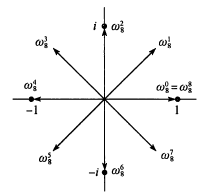
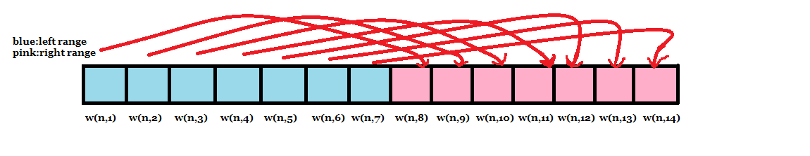
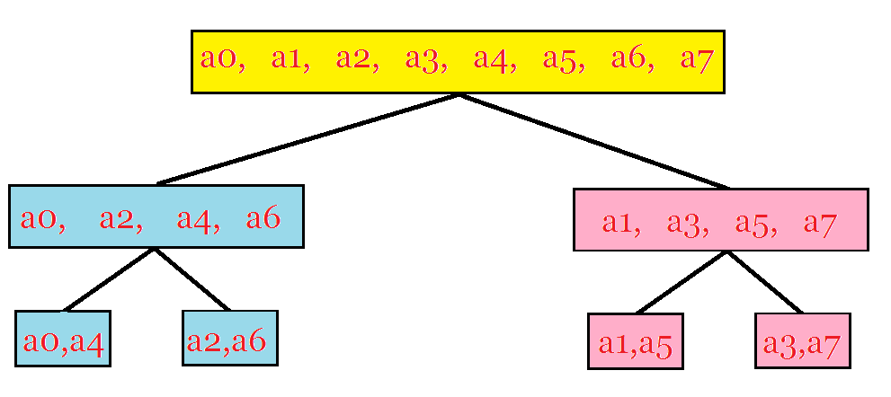

$ \rm{0x01\quad Preface} $
这篇文章初写于 $ 7/1/2018 $ ，是在陪同好友 $ yjk $ 与 $ wx $ 以及学长 $ rqy $ 一起去参加省队集训时写的。今天突然来了兴致，打算重新复习一遍 $ FFT $ 并且写 $ MTT $ ，于是便有了这篇文章。
其实一开始我是不情愿把这篇文章搬到这儿来的——这好像是一个时代的缩影，那个时代的orchidany特别喜欢扮演老师，每天仿佛来到奥赛室只是为了“为人师”的：心性浮躁，学习功利。但现在我则是想沉下心来，认真做学问。
但无论如何，我希望这篇原本冗杂繁长的文章可以更短、更新颖、从更高的角度审视一些问题。
$ \rm{0x02\quad Convolution} $
卷积 $ \boldsymbol{(Convolution)} $ ，准确来说是一种通过两个函数 $ \boldsymbol f $ 和 $ \boldsymbol g $ 生成第三个函数的一种数学算子.
而广义上其定义为：
我们称 $ h(x) $ 是 $ g(x) $ 与 $ f(x) $ 的卷积。
而此处我们讨论的是整次多项式域，那么就把其定义划归进多项式，得到
其中 $ A(x) $ 和 $ B(x) $ 均为 $ N-1 $ 次多项式
比较显然的是，在我们合并同类项的情况下，最终卷出来的结果应该有 $ 2n+1 $ 项。
$ \rm{0x03\quad Dot~Method} $
我们知道，原本的多项式是系数表示法，现在我们将其转化为点值表示法 $ (\boldsymbol{dot~method} ) $ 。即我们可以把多项式 $ F(x) $ 转化为多项式函数 $ f(x) $ ，那么这个 $ n $ 阶函数就可以由 $ n+1 $ 个点唯一确定。即 那么 这是很显然的，并且这 $ n+ $ 个点是随意选取的——只要求它们相异即可。
假设我们有两个关于 $ x $ 的 $ n+1 $ 次多项式 $ A(x) $ 和 $ B(x) $ ，我们要对它的点值表达式进行乘法操作。由于结果有 $ 2n+1 $ 项，我们考虑补上一堆项，并对 做乘法可得
我们观察点乘法，它的时间复杂度达到了 $ \Theta(n) $ ，完全可以接受。那么不妨先看一下算法的大体思路：
对于每个因子多项式，选取 $ n+1 $ 个点，得出点值表达式（复杂度 $ \Theta(n^2) $ ） $ \longrightarrow $ 点乘法(时间复杂度 $ \Theta(n) $ )——>将得出来的 $ C(x) $ 的点值表达式再转换成系数表达式(复杂度 $ \Theta(n^2) $ )
这就是 $ FFT $ 的大体流程。转化之后怎么没多快常数还大了
虽然其余部分的时间复杂度还是很麻烦的 $ O(n^2) $ ，但是都是可以优化成 $ O(nlogn) $ 的。
本质上的 $ FFT $ 包含 $ \boldsymbol{DFT} $ （离散傅立叶变换）和 $ \boldsymbol{IDFT} $ （逆离散傅立叶变换）实际上， $ DFT $ 对应着的就是把系数表达式映射到点值表达式的过程， $ IDFT $ 对应着的就是我们把点值表达式映射到系数表达式的过程。
$ \rm{0x04~Base ~of~Optimization} $
因为实际上，我们的第一步——求值（系数转点值）和我们的第三步（点值转系数）都是可以做到 $ nlogn $ 的，那么总的时间复杂度，渐进意义下就是 $ O(nlogn) $ 的。
下面就让我们来看看如何优化：
$ \rm{Advanced~Trick~Point} $ $ \color{red}{2} $ $ \rm{Unit ~Complex ~Root} $
$ n $ 次单位复根是满足 $ \omega^n = 1 $ 的复数 $ \omega $ ，其中我们可以由复数的运算法则（辐角相加，模相乘）很简单地得出 $ n $ 次单位根有 $ n $ 个这个结论——亦或者是用代数基本定理证，都可以。而又因为复数 $ \omega^n $ 在复数平面上的模都是一，所以相乘之后还会是一，那么所有的 $ \omega_i,1 \leq i \leq n $ 就会均匀分布在单位圆上，类似当 $ n = 8 $ 时它是这样的：

我们考虑欧拉公式：
我们取 $ x =2\pi $ ，可以得到如下关系式：
们把此时的单位根称之为主次单位根，记作
那么对于其他的单位根，记作 都是主次单位根的整次幂，也就是上图中的一圈。
诶，这个有啥用啊 $ QAQ $ ?
那是因为单位根们有一堆特别好用的性质，让我们可以将数据规模不断折半，使得其达到 $ nlogn $ 的复杂度……
那么我们先来看其支持其规模减半的引理：
引理：对任何整数 $ n \geq 0,k \geq 0,d >0 $ ,有
$ \mathcal{Proof.} $
这个好像很好证的样子……代入定义可以获得
$ \mathcal{Q.E.D.} $
引理：对于任何大于 $ 0 $ 的偶数 $ n $ ，都有 $ n $ 个 $ n $ 次单位复根的平方的集合，等于 $ \frac{n}{2} $ 个 $ \frac{n}{2} $ 次单位复根的集合。
$ \mathcal{Proof.} $
我们可以由消去引理得到 那么
$ \mathcal{Q.E.D.} $
那么接下来，如果对所有的 $ n $ 次单位跟平方一下，我们会发现 $ \frac{n}{2} $ 次单位根每个都恰好出现了两次——也就是说，在 $ n $ 个 $ n $ 此单位复数根的集合（朴素的集合，即不可重集）里，只有 $ \frac{n}{2} $ 个元素。我们参考上面那张图，它的意义就在于方向相对的两只向量，其平方相等。
那么把所有 $ n $ 单位根的平方画到一个数列上就是这样。

这个引理直接保证了我们求值的复杂度为 $ \Theta(n \log n) $
而我们在代码实现中，不能直接得到 $ e $ 或者虚数 $ i $ ，所以这个时候求单位根的任务就交给了我们上文中提到过的欧拉公式。
引理：对于任意 $ n>0 $ 且 $ k $ 不能整除 $ n $ ，我们都有
$ Proof. $
由几何级数的求和公式（等比数列求和公式) 可得 由于保证了 $ k $ 不可整除 $ n $ 所以分母一定不为 $ 0. $
$ \mathcal{Q.E.D} $
$ \rm{0x05\quad DFT \to FFT} $
那么我们在了解完单位复数根之后，便可以正式地对 $ DFT $ 给出定义与操作方案了。
对于我们已知的一个多项式 在 $ \omega_n^0,\omega_n^1,\omega_n^2 \cdots \omega_n^{n-1} $ 处的取值，我们可以假定 $ n $ 是 $ 2 $ 的幂，因为即使它本身不是 $ 2 $ 的幂，我们也可以通过向高次幂补值为 $ 0 $ 的项来解决这个问题。而补足 $ 2 $ 的幂的目的，就是为了在 $ FFT $ 分治的过程中，使之可以一直分治下去且每次分治得出的两半可以进行运算。
那我们现在会有一个 $ A $ 的向量组 $ \vec{a} = {a_1, a_2, a_3 \cdots a_{n-1}} $ ，对于 $ k = 0, 1, 2, \cdots n -1 $ ，定义 $ y_k $ 如下： ，那么向量 就称作系数向量 $ \vec{a} = {a_1, a_2, a_3 \cdots a_{n-1}} $ 的离散型傅立叶变换（ $ \boldsymbol{Discrete Fourier Transformation} $ ）。
嗯，这个离散型我们可以由点乘法联想意会一下：本来 $ A(x) $ 是一个优美的多项式，转变成函数之后是一条优美的曲线（优美只是定语……不是重要内容 $ qwq $ ），结果你突然把它拆成了一堆离散的点，把它用点值法表示，故称之曰：“离散型” 。
在上文中我们分析过，将系数表达式转化为点值表达式需要的时间复杂度为 $ O(n^2) $ ，这是朴素算法。而我们只需要用一种被称作快速傅立叶变换（ $ \boldsymbol{Fast Fourier Transformation} $ ）的方式，就可以将其时间复杂度压缩成 $ O(nlogn) $ 。而在这里我们就用到了刚才证明的引理——折半引理。
我们考虑将原来的多项式 重定义成两个次数为 $ \frac{n}{2} $ 的小多项式 $ A^{[0]}(x) $ 和 $ A^{[1]}(x) $ ：
得到
从而有伪代码：
1 | int Lim = 1, N, M ; |
以上是基于 $ pks $ 标准下的伪代码你可以试试在c++标准下运行，其中 $ for $ 循环部分， $ grow $ 表示当前循环变量的单次增量，之后带有 $ with $ 表示每次循环结束都会进行的运算（下同
嗯，这就是求值的方法，好像很 $ nice $ 地达到了 $ O(n \log n) $
上文中我们曾经提及过的范德蒙德矩阵可以放到这儿用：
$ \begin{vmatrix} 1 & 1 & 1 & \cdots & 1 \newline 1 & \omega_n & \omega_n^2 & \cdots & w_n^{n-1} \\newline1 & \omega_n^2 & \omega_n^4 & \cdots & \omega_n^{2(n-1)} \newline \vdots & \vdots & \vdots & \ddots & \vdots \newline 1 & \omega_n^{n-1} & \omega_n^{2(n-1)} & \cdots & \omega_n^{(n-1)(n-1)} \newline \end{vmatrix} $ $ \begin{vmatrix} a_0 \newline a_1 \newline a_2 \newline \vdots \newline a_{n-1} \end{vmatrix} $ = $ \begin{vmatrix} y_0 \newline y_1 \newline y_2 \newline \vdots \newline y_{n-1} \end{vmatrix} $
那为了求出我们的 $ \vec{a} = {a_0, a_1 \cdots ,a_{n-1}} $ 我们应该让刚刚求值算出的 $ \vec{y} $ 乘上我们 $ \vec{V}^{~-1} $ （ $ \vec{V} $ 的逆矩阵）即可。但是桥豆麻袋~~~不需要用什么高消啊…余子式啊…我们只需要以下：
推论：对于 $ j,k = 0,1, 2 \cdots n-1,V_n^{-1} $ 的 $ (j, k) $ 处的值为 $ \omega_n^{-kj}/n $
$ Proof. $
我们考虑反向证明，已知 $ V_n’ $ 是一个 $ (j,k) $ 处值为 $ \omega_n^{-kj}/n $ 的、与 $ V $ 形态相同的矩阵，那我们只需要证明 $ V’ \cdot V = I_n $ 即可，其中 $ I_n $ 是 $ n $ 阶单位矩阵，即主对角线都是 $ 1 $ ，其余位置上是 $ 0 $ 的矩阵。
那么我们考察 $ V’ V $ 中的元素 $ (i, j) $ ，有如下的式子
由求和引理当且仅当 $ i=j $ 时其值为一，其余的时刻均为零，所以有 $ V’V = I_n $
$ \mathcal{Q.E.D} $
那么我们把我们刚刚求出来的逆矩阵 $ V^{-1} $ 美化一下，提出每一项所除的 $ n $ ，可以得到 $ IDFT $ 可以如此计算： 诶，这个好像……跟我们求值时的公式差不多？没错，除了带个负号，其余的都差不多。所以我们可以考虑打个标记：当 $ flag=1 $ 时，他是正向 $ DFT $ ；当它等于 $ -1 $ 时，它是逆向的 $ IDFT $ 。这可以让我们通过这一个函数解决两个过程。我们只需要用 $ y $ 替换 $ a $ ，用 $ \omega_n^{-1} $ 替换 $ \omega_n $ ，其余的没什么差别，于是……时间复杂度还是 $ O(n \log n) $ 的!
1 | void FFT(int Lim,complex *A,int flag){ |
好的，现在嘛……可以考虑撒花花啦！因为我们的 $ FFT $ 实际上已经结束了！ $ But $ ，这个递归版本的 $ FFT $ 由于牵扯到 $ sin/cos $ 的运算、 $ double $ 、递归时的入栈出栈（底层），所以常数特别的大 $ emmmmm $ ，那么——
$ \rm{0x06~Iterative~ Optimization} $
我们现在要引出的就是迭代版的 $ FFTqwq $
· $ \rm{Advanced~Trick~Point} $ $ \color{red}{3} $ $ \rm{The~Butterfly ~Operation} $
$ emmm $ 先上一个不是特别卡常数的优化。我们观察之前的代码中，有这么一步：
1 | for(int i = 0;i < (Lim >> 1) ; i ++, w = w * unit) { |
我们会发现…… $ \omega \cdot A^{[1]}[i] $ 被执行了两次，所以我们不妨用个变量记录它：
1 | for(int i = 0;i < (Lim >> 1) ; i ++, w = w * unit) { |
嗯，这就是全部的优化啦！那么，FFT，完！
$ qwq $ 这分明是骗小孩子的啦……如果单单这一步就可以卡常数的话，那这个世界该多么美好 $ \mathcal{QAQ} $ 。好吧，说这个的原因，只是为了引出我们关于蝴蝶操作的定义：
我们定义 $ \omega_n^k $ 为旋转因子，那么每一次我们先将 $ y_k^{[1]} $ 与旋转因子的乘积存储在一个变量 $ t $ 里，并在 $ y_k^{[0]} $ 增加、减去 $ t $ 的操作称为一次蝴蝶操作。
说白了，蝴蝶操作是一次 $ O(2) $ 的求出 $ A^{[0]}_k $ 与 $ A^{[1]}_k $ 的操作。
我们首先考虑按照递归的思路，将 $ FFT $ 的分治流程刻画一下：

我们会发现，其实我们是可以对它进行反向迭代的。以上面的迭代树为例，我们的步骤大体如下：
$ step 1 $ 成对地取出儿子节点，用蝴蝶操作计算出其 $ DFT $ 。
$ step 2 $ 用这一步的 $ DFT $ 替换之前的；
$ step 3 $ 直到我们迭代到根节点为止，否则返回 $ step 1 $
而反向迭代似乎有规律可循。我们发现只要我们用迭代的过程模拟出回溯的过程即可。那么思路便有了：三层 $ for $ ，先枚举区间长度（1，2，4，8……），第二层枚举长度为 $ j*2 $ 的每个区间的起点——意图为同时枚举两个相邻区间，便于相邻区间之间 $ DFT $ 的合并，第三层负责遍历每段区间，运用蝴蝶操作逐个合并：
1 | for(j = 1; j < Lim; j <<= 1){//枚举区间长度，从小区间到大区间依次合并。 |
嗯，好像……海星？哈，思维不严谨的我们漏了一个地方：我们在 $ DFT $ 的时候，为了保证时间复杂度是 $ \Theta(\log n) $ ，我们曾经进行过一次 $ A(x) = A^{[0]}(x^2)+xA^{[1]}(x^2) $ 的操作，所以我们需要自动调整顺序。通俗一点，就是我们原来的序列顺序是 $ 0,1,2,3,4,5,6,7 $ ，但是迭代版的 $ FFT $ 却需要的顺序应该跟叶子结点的顺序吻合，即 $ 0, 4, 2, 6, 1, 5,3,7 $ 。所以——
这个嘛……我们可以选择打个表观察：
原来的序号 $ 0 1 2 3 4 5 6 7 $
现在的序号 $ 0 4 2 6 1 5 3 7 $
原来的二进制表示 $ 000 001 010 011 100 101 110 111 $
现在的二进制表示 $ 000 100 010 110 100 101 011 111 $
诶，二进制好像是反序的嗷~~这便是我们的最后一个 $ trick $ ，蝴蝶定理。而因为我们观察到的蝴蝶定理是满足一一对应性的，所以我们在 $ FFT $ 之前 $ swap $ 一遍即可。
嗯，然后我们可以将这个反序存在一个数组里面。类似这样求出来：
1 | for(i = 0; i < Lim; i ++ ) R[i] = (R[i >> 1] >> 1) | ((i & 1) << (L - 1)) ; |
呃，这个二进制计算自己推一下就好。
那么我们可以看到，这就简化了很多冗余的步骤，并让我们脱离递归的大常数。真开森啊
最后附迭代版的代码(我写的常数好像有点儿大 $ QAQ $ )
1 |
|
啊……那就撒花花吧！！
$ \rm{0x00\quad Afterword} $
以下是原尾语，保留了下来：
嗯……怎么说呢，现在看这个算法，真是简单的一匹啊……代码这么短
这么容易背过。但是当时理解起来却花了很大心思呢！这篇博客我写了整整三天 $ qwq $ ，由于要培训和考试，所以拖拖沓沓地写了三天，一边写一边感叹自己理解的简直太浅显了。每一个证明、每一个引理、甚至每一个符号，我都需要去和其他 $ DALAO $ 比对审核、或者缠着 $ rqy $ 问个没完；每次一讲到原理，我都发现自己原来并不理解那些，于是不得不推倒重来。这篇博客会持续更新，补充语意不明、证明难以理解的地方。以下是温馨提示：
- 好多自己当初不理解的地方在代码里就只有半行qaq
- 三个引理中，只有消去引理跟算法的实现没有关系——消去引理主要是用来证明其他引理的
真 · 结束语：
其实没什么好说的，今天重新复习了一遍，发现自己以前有好多内容虽然如原尾语所言，看上去现在看这个算法，真是简单的一匹啊，但实际上忽略了好多东西。我想大概只有一遍一遍地钻研才能了解完全一件事情吧。
$ \rm{Reference} $
- $ [1] $ : $ rvalue $ 的 $ blog $ $ ^{^{[\nearrow ]}} $
- $ [2] $ :算法导论 $ ^{^{[\nearrow]}} $ 提取码: txs2
- [3]*：鸣谢rqy